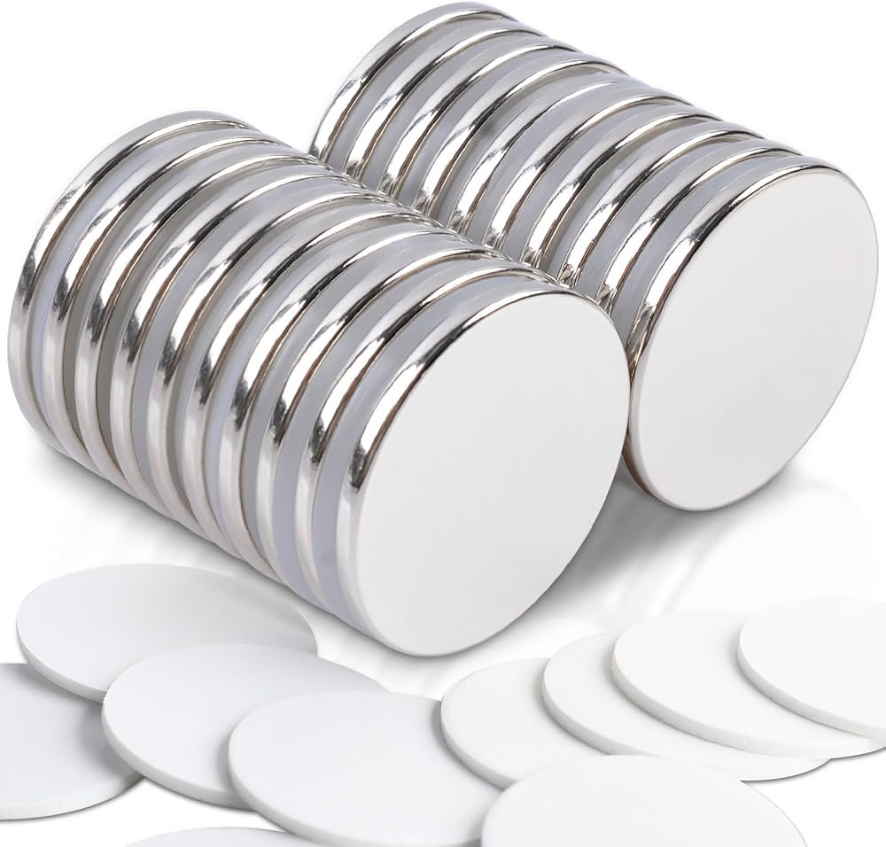

| Property |
Value |
| Atomic Mass |
144.242 u |
| Atomic Number |
60 |
| Number of Isotopes |
142, 143, 144, 145, 146, 148, 150 |
| Melting Temperature |
1021 °C |
| Boiling Temperature |
3074 °C |
| Density |
7.007 g/cm³ |
| Electronegativity |
1.14 |
| Year of Discovery |
1885 (Along with Praseodymium) |
| Abundance |
38 ppm in Earth's crust, 10–40 pmol/L in oceans |
| Characteristics |
- Rare earth metal, part of the lanthanide group.
- Shiny, silvery appearance, oxidizes quickly in air.
- Slow reaction with cold water, rapid reaction with hot water.
- Used in household devices like color TVs and fluorescent lamps.
- Commonly found in lighter flint alloys.
- Second most abundant rare earth element, nearly as abundant as copper.
|
| Technological Applications |
- Neodymium magnets found in hard drives, speakers, headphones, and microphones.
- Essential for creating a strong magnetic field in a small space.
|
| Deposit Locations |
- Found in minerals such as monazite and bastnäsite.
- Major reserves in China, followed by Vietnam and Brazil.
- European deposits in Sweden and Norway.
|
| Health Effects |
- Can cause respiratory issues and pulmonary embolism in work environments.
- Accumulation in the body can damage the liver.
- Neodymium magnets may interfere with medical devices like pacemakers.
|
| Environmental Effects |
- Mining and processing can lead to water and soil pollution.
- Causes biodiversity loss and air contamination.
- Potentially toxic to aquatic organisms, affecting reproduction and nervous system functions.
|
